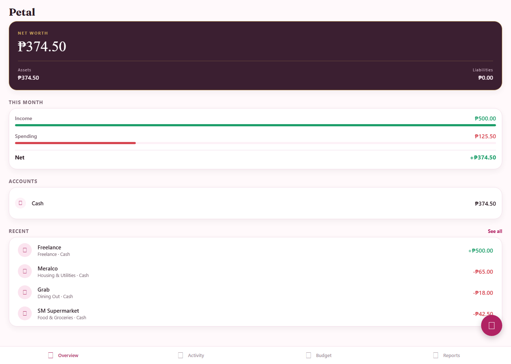

Petal

A real ledger, not a labeled list
This screenshot is the actual app running, not a mockup — every number on it was generated by adding real transactions through the UI and watching the double-entry math resolve them into net worth. It's an Expo app, so there's no hosted web link to click; clone it and run npm start to open it yourself.
The Problem
Most budgeting apps track categories as labels on a list — "Food," "Rent," "Transport" — with net worth and monthly totals computed separately from the transaction log itself. That split is exactly how numbers quietly drift from reality: a manual adjustment here, a miscategorized entry there, and the dashboard stops matching what actually happened. I wanted to build the version that can't drift, because the arithmetic itself won't allow it.
What I Built
Petal is a local-first, offline-capable finance app on Expo where every category is backed by a hidden ledger account, and every transaction is a real double-entry posting — an expense debits the category's account and credits a real one (cash, checking, credit card); income does the reverse. Net worth and the profit & loss report aren't separately maintained numbers, they fall directly out of ledger arithmetic. There's a rule-based auto-categorizer that learns from corrections at zero AI cost, CSV bank-statement import with column mapping, envelope budgeting with rollover, and an entirely optional AI layer — "Ask about your spending" — that only activates if you paste in your own API key, and only ever sends aggregated totals, never the raw ledger.
Engineering Decisions Worth Calling Out
An unbalanced transaction is blocked at three independent layers, not one: a Zod schema validates shape before anything touches storage, postTransaction() in src/domain/ledger.ts is the single gate every transaction must pass through, and the SQL schema itself has a CHECK (debit_account_id <> credit_account_id) constraint — so even a bug that skipped the application-level checks still couldn't write a broken entry. All domain logic (the ledger, budget math, the categorizer) is pure TypeScript with zero framework imports, meaning it's fully unit-testable without spinning up a database or a screen. Storage is swappable by design — every screen depends on a Repos interface, never on expo-sqlite directly — because a personal-finance app is exactly the kind of project where "I'll just refactor it later" turns into "I'm afraid to touch it," and interface-first design is the difference between those two outcomes.